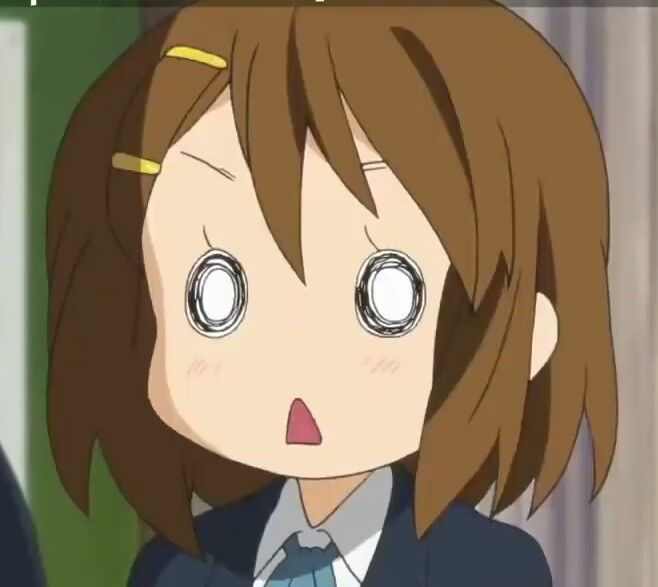

About this Site
If you're anything like me, then you've probably taken a couple theory classes, and found the subject interesting. You've probably also watched some anime, and listened to the opening songs every once in a while. Perhaps some time later, you decided to explore other tangentially related genres of music similar to those anime openings which you were first exposed to. Maybe then, you found yourself unexplicabily interested in this new diverse category of music, in between its catchy rhythms and cutesy vocals. Maybe at one point or another, you thought: "What makes this type of music special?" Well, this site attempts to answer this particular question. Through analyses of popular pieces, and the unpacking of classic and niche music theory concepts through Jpop, Jrock, Utaite, and Vocaloid music, I will attempt to figure out what makes Japanese music sound the way it does and why we are drawn into this wide genre. This site is pretty bare-bones right now, though I hope to update it with blogs and other stylistic improvements in the future. Stay tuned!

About the author
Nice to meet you! My name is Shiwei, and I'm currently attending High School in Cupertino, California. I grew up simultaneously taking music theory lessons and listening to utaites like Kano. I really enjoyed listening to the work of bands like RADWIMPS and Tuyu, and I wanted find out what it was that drew me into their music. I created this blog to record my findings, and to hopefully give those who may share similar interests a complete one-stop shop guide on the subject. In my spare time, I enjoy cosplaying, collecting CDs, and taking care of my two Shiba Inus, Tino and Mugi. Someday, I hope to start my own rock band which performs covers of Japanese songs, and original music with a particular Japanese aesthetic. In the meantime, feel free to poke around this site and read what it has to offer. If you have any questions, or see any errors on this site, please feel free to contact me via email.